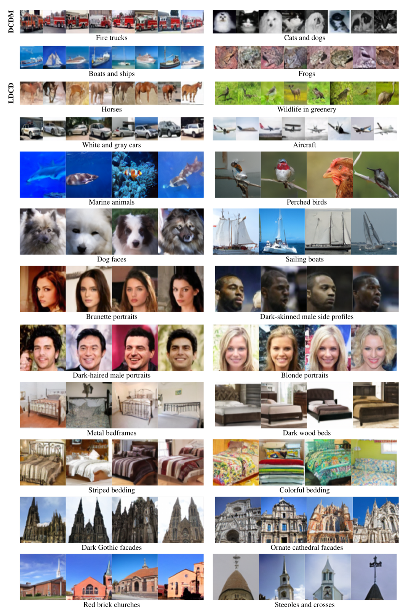
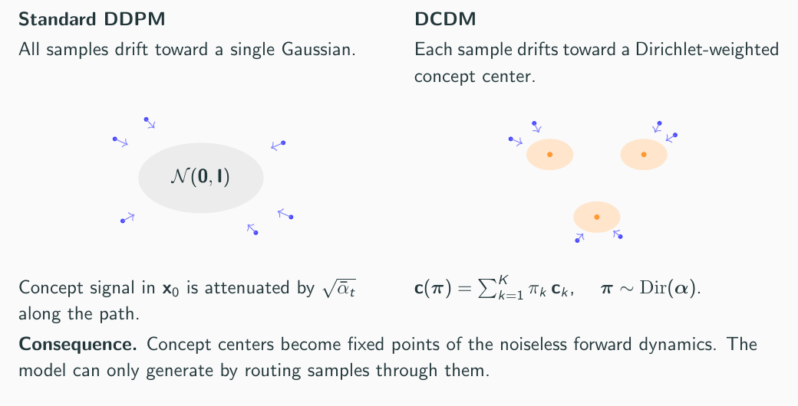
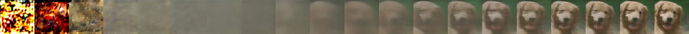
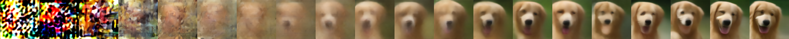
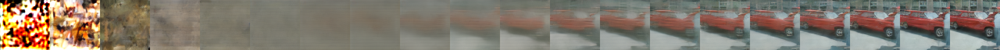
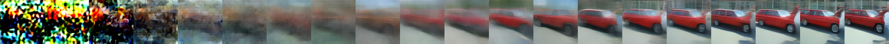

|
Unsupervised Concept Discovery with Dirichlet Concept Diffusion Models TL;DR: DCDM asks whether a generative model can discover reusable visual concepts while learning to generate images. It learns concept centers and an input-dependent Dirichlet distribution over them, making concept discovery part of the diffusion objective rather than a post hoc labeling step.
|
|
 Generated prototypes associated with learned concept components across datasets. |
DCDM studies unsupervised concept discovery in generative modeling. The central question is whether a model that learns to create images can also expose reusable concept components that help explain the images it creates.
Instead of adding labels, captions, attributes, or pretrained text-image priors, DCDM learns a set of concept centers directly from data while optimizing a diffusion-based generative objective. For each input, a concept encoder infers a Dirichlet distribution over those centers. The weighted center shapes the forward diffusion mean and conditions the reverse denoising process, so the same objective that trains the generator also creates pressure for stable, reusable visual components to emerge.
Standard diffusion perturbs all samples toward a single zero-centered Gaussian target. DCDM instead gives each sample a learned concept-dependent path through diffusion. The model infers how much each concept center contributes, then uses the resulting weighted center during both noising and denoising.

Standard DDPM sends every sample toward a single Gaussian; DCDM routes samples through learned concept centers.
The concept encoder maps an input image to a Dirichlet distribution over concept centers. Sampling or averaging that distribution gives a compositional concept representation. The denoising network then predicts diffusion noise using the noisy state, the timestep, and the aggregated concept center.
This makes concept discovery intrinsic to generation. If a center helps explain many samples, it becomes useful for denoising and generation, and the learned component can be inspected through generated prototypes and interventions.
The analysis identifies two roles for the aggregated concept center. First, it shapes diffusion trajectories so concept-level information remains active along the noising path. Second, it reduces ambiguity in denoising by steering predictions toward concept-consistent explanations. Together, these effects encourage a coarse-to-fine process: early steps recover concept-level structure, and later steps refine instance-specific details.




Matched reverse denoising trajectories from the paper's controlled-diffusion figure.
Many generative models can create realistic samples without exposing the reusable structure behind those samples. DCDM treats generation as a way to test concept discovery: if learned components are meaningful, they should organize samples, support interventions, and reflect stable visual regularities across a dataset.
The broader goal is a generative model whose internal organization is not only useful for synthesis, but also inspectable as conceptual knowledge.
The evaluation asks whether discovered components behave like meaningful visual concepts rather than arbitrary internal labels. The tests cover targeted concept ablation, neighborhood coherence and predictability, and source-generation agreement across CIFAR-10, Conceptual ImageNet, CelebA, LSUN Bedroom, and LSUN Church.
A direct way to test whether a component is meaningful is to suppress it during generation and compare the result against a control edit. In these examples, the target edit changes the selected attribute, while the control edit keeps the image close.
Concept ablation examples built from the paper's CAC sweeps.
The table below reports the main concept ablation change (CAC) and source-generation agreement (SGA) metrics. Positive lift means the inferred concept component has a stronger targeted effect than its control.
| Dataset | CAC target ↑ | CAC control ↓ | CAC lift ↑ | SGA match ↑ | SGA mismatch ↓ | SGA lift ↑ |
|---|---|---|---|---|---|---|
| CIFAR-10 | 1.283 ± 0.004 | 0.069 ± 0.004 | 1.214 ± 0.007 | 0.759 ± 0.001 | 0.094 ± 0.000 | 0.665 ± 0.001 |
| C-ImageNet | 1.250 ± 0.003 | 0.356 ± 0.009 | 0.893 ± 0.010 | 0.242 ± 0.000 | 0.031 ± 0.000 | 0.211 ± 0.000 |
| CelebA | 0.990 ± 0.010 | 0.162 ± 0.001 | 0.828 ± 0.010 | 0.648 ± 0.000 | 0.335 ± 0.000 | 0.313 ± 0.000 |
| LSUN Bedroom | 1.017 ± 0.018 | 0.297 ± 0.004 | 0.720 ± 0.022 | 0.481 ± 0.001 | 0.314 ± 0.002 | 0.167 ± 0.002 |
| LSUN Church | 1.189 ± 0.008 | 0.264 ± 0.004 | 0.925 ± 0.007 | 0.360 ± 0.001 | 0.098 ± 0.000 | 0.262 ± 0.001 |
CAC and SGA metrics from the paper.
The number of learned components fixes the granularity of the concept space. Across moderate capacity changes the learned components remain coherent, but excessive capacity can split related structure across overlapping components. Natural next steps include adaptive concept growth and merging, and hierarchical concepts that vary across diffusion timesteps.
Questions? Email yg534@cornell.edu.